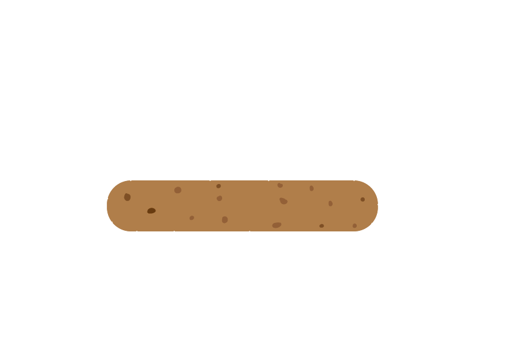

Welke ingrediënten zitten er in de burger?
Toelichting ingrediënten
De ingrediënten die worden gebruikt zijn duurzaam verbouwd en zo vaak mogelijk lokaal verkregen. Het zeewier wordt geteeld in Nationaal Park Oosterschelde. Het zeewier heet Royal Kombu. Royal Kambu is een bruinwier met dikke lichtbruine bladeren. Het is rijk aan joduim, calcuim, magnesium, eiwitten en meerdere vitamines. Het is dus niet alleen goed voor de wereld, maar ook voor het menselijk lichaam! De burger is volledig plantaardig en daarmee ook vegetarisch en veganistisch.